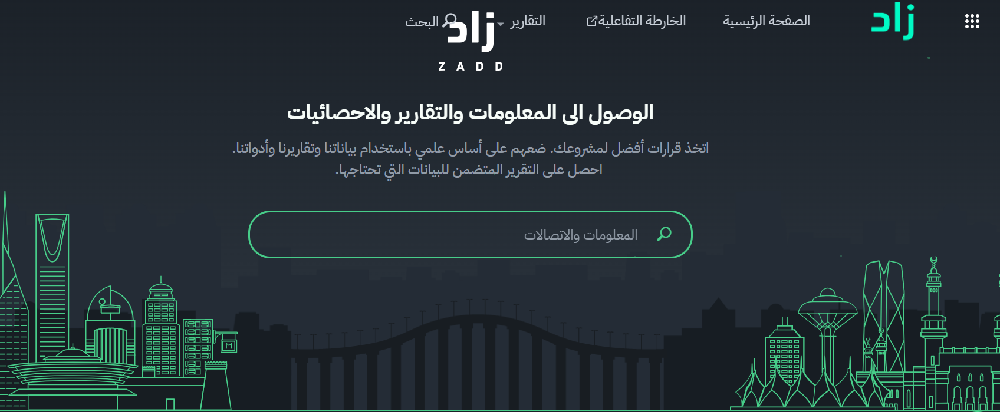

Hi, I'm Maram Faris Albadrani 👋
Contact1,000+Operational issues resolved
10+KPI dashboards maintained
100%Team quality improvement
01
About
I'm an organized, tech-savvy operations professional...
02
Experience
Operational Support Specialist
Tamkeen Technologies
Nov 2023 — Mar 2026
- Ensured full compliance...
- Identified and triaged over 1,000 operational issues...
- Supported day-to-day operations...
Performance Evaluation Specialist
Tamkeen Technologies
Apr 2024 — Apr 2024
- Partnered with cross-functional teams...
Data Analyst — Cooperative Training
Takamol Holding
Jan 2019 — Aug 2019
- Designed and maintained dashboards...
- Prepared Excel reports...
Product Manager — Cooperative Training
Takamol Holding
Jan 2019 — Aug 2019
- Actively participated in Daily Scrum...
- Managed product workflows using Agile processes...
03
Skills
Hard Skills
CRM Systems Management
Microsoft Office
Ticketing / Case Management
Data Entry, Cleaning & Validation
Workflow Coordination
Soft Skills
Communication
Problem Solving
Attention to Detail
Time Management
Adaptability
04
Projects

Zad
View details →
05
Education
Bachelor's Degree in Information Systems
Prince Sultan University
2019
06
Let's talk
If you'd like to get in touch about an opportunity...
✉️ Maramalbadrani8@gmail.com
📞 0551170047
🔗 LinkedIn Profile